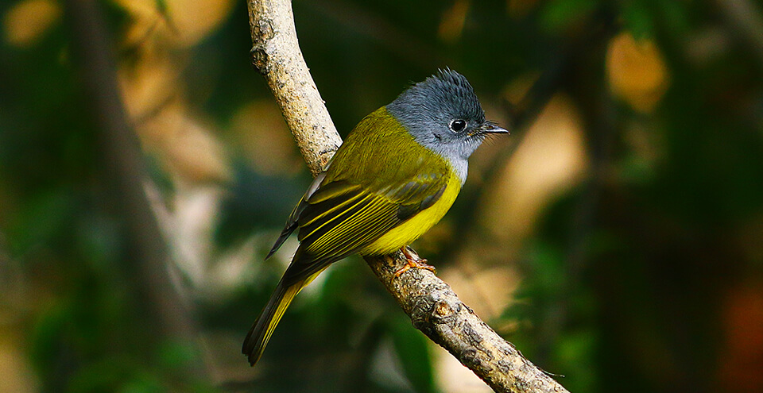
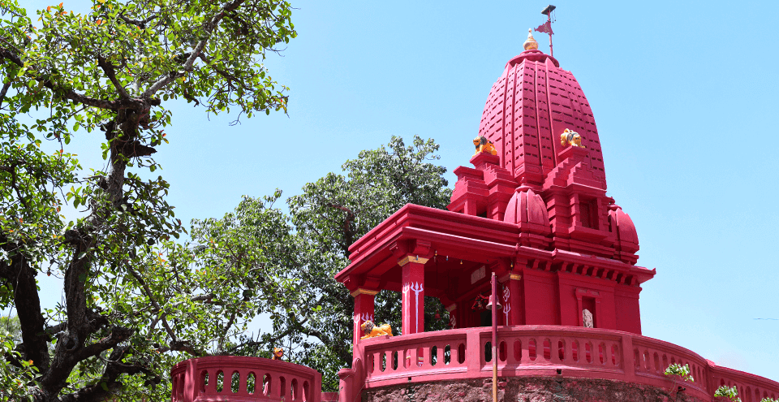
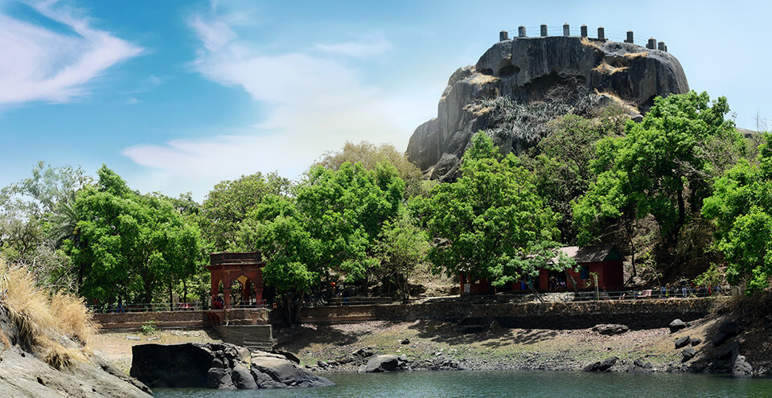
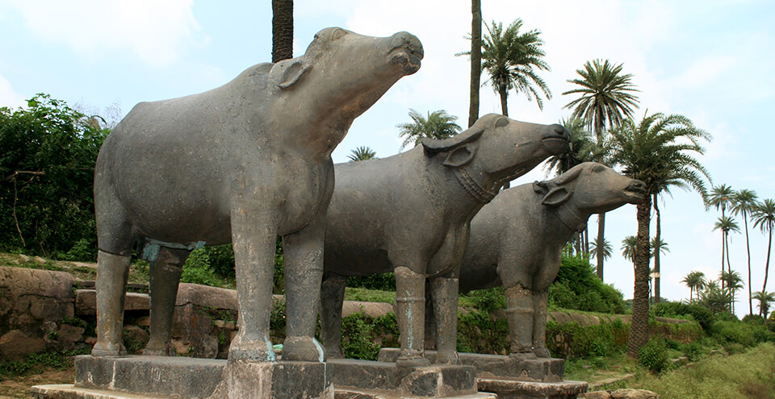

NAKKI LAKE
Recognized as the first ever manmade lake in India, Nakki Lake is
also a preferred place to see in Mount Abu. You can choose to take
a boat ride at the lake and watch the sun set past the beautiful
hills surrounding this place. Nakki Lake is also popular for being
the place where the ashes of Mahatma Gandhi had been immersed.
Toad rock, a place for sightseeing in Mount Abu is located close
to Nakki Lake.
GURU SHIKHAR
Recognized as the highest point on this mountain range, Guru
Shikhar is an exquisite place for sightseeing in Mount Abu. Taking
about 300 steps up to Guru Shikhar, you reach the temple of Guru
Dattatreya, an incarnation of the Divine Trinity (Brahma, Vishnu
and Shiva). People flock to this place both for its religious
aspects and the panoramic views.
TOAD ROCK VIEW POINT
Known for being surrounded by a number of strangely shaped rocks,
Nakki Lake offers numerous photo ops to visitors. One of the most
popular destinations near Nakki Lake however, has to be the Toad
Rock View Point. Located on the main trekking trail near the Lake,
the Toad Rock has often been referred to as the mascot of Mount
Abu. The massive rock structure is an excellent illustration of
igneous rocks found in amazing shapes and is shaped, as the name
suggests, like a toad. One of the most frequented places in the
hill station; people visit this place out of sheer curiosity. It
is pretty easy to climb the rock and the views that it offers of
the Nakki Lake and the surrounding greenery are unparalleled.
Apart from the novelty of the rock itself, the breathtaking
scenery from atop just adds to whole experience, making it well
worth your while.
DILWARA JAIN TEMPLE
Established some time in between the 11th and 13th centuries, the
Dilwara Jain temples are considered to be among the best specimens
of architectural perfection in the country. A complex of five
temple structures, the Dilwara Jain temples are located at a
distance of about 2.5 kilometres from Mount Abu. Carved out of
white marble, these temples features interiors that have intricate
designs spreading everywhere from doorways to ceilings. Dilwara
Jain temples are a must visit place in Mount Abu.
MOUNT ABU SANCTUARY
Covering 288 square kilometres of area, the Mount Abu Wildlife
Sanctuary is a part of the subtropical forest in this region.
Containing rich flora and fauna, this sanctuary allows you to come
close to some rare and exotic species of wild animals, including
the Indian fox, pangolin, grey jungle fowl, striped hyena, and
also Indian leopard, the apex predator here.

PEACE PARK
Nestled in between two famous Aravali peaks, the Guru Shikhar and
Achalgarh, the Peace Park in Mount Abu is a part of the Brahma
Kumaris' establishment. With an ambiance that creates the perfect
blend of serenity and tranquillity, the park offers a beautiful
backdrop for silence and peaceful recreation. At the Peace Park,
one can visit the rock garden that houses a wide variety of
Cactaceae, the orchard, citrus corner, and view the numerous
floral displays that include coleus, shrubs, hibiscus, creepers
and climbers, and an exquisitely beautiful rose garden. The park
also has a number of areas, like a stone cave and huts, where
people can meditate in a tranquil environment. The Brahma Kumaris
also provide a guided tour of the park, and you can also watch a
short video film that explains interesting meditation concepts.
This place of solitude in the lap of nature is something you must
experience.
LAL MANDIR
Located on Delwara Road, near the Delwara Jain Temple, is this
small temple dedicated to Lord Shiva. The temple offers a very
peaceful ambiance and is considered as one of the most ancient
holy places located in Mount Abu. A small and beautiful temple,
the Lal Mandir gets its name from the fact that all the walls of
the temple have been painted red. The temple is one of the must
visit spots in Mount Abu, popular among the religious tourists as
well as others. The temple is also quite well-known for being a
Swayambhu '' Shiva Temple, so named because the idol placed inside
the temple can be seen wearing a 'jenau'.

TREVORS TANK
Trevor's tank, a crocodile park, is a manmade crocodile breeding
spot which is located at a distance of about 5 kilometres from
Mount Abu. The spot offers amazing scenic beauty and a great spot
for crocodile, bird, and other wildlife (like the black bear)
sightings. The lush green surroundings make it quite a popular
picnic spots that is always worth a visit. Trevor's Tank is a
small but pristine ecosystem for crocodiles, and creates a unique
blend between manmade creations and the natural environment. Being
located at a hill station, Trevor's Tank can be visited all
throughout the year, owing to the mild weather it enjoys all the
time. However, it might be a good idea to avoid the monsoon
season, as that may hinder your explorations slightly. Whether you
are a shutterbug or want to watch some birds or other wildlife,
Trevor's Tank is a destination to add on your Mount Abu
bucket-list.

ACHLESHWAR
The Achleshwar Mahadev temple in Mount Abu is dedicated to Lord
Shiva. According to local legends, the temple is built around a
toe print of Lord Shiva. Like most temples, Shiva is worshipped in
the form of a shiva-linga, but what makes it interesting is the
fact that the shiva-lingain here is a naturally occurring
structure. The temple is well-known for its ambiance, beautiful
filigree work, and the numerous bull statues that represent Nandi,
the noble carrierof Lord Shiva.Within the temple, there is also a
pit that is said to be the entryway to narak, the netherworld.
When you take into account the local legends and histories that
surround this beautiful temple, is when you understand whyit is
worth a visit.

ACHALGARH FORT
Without doubt one of the most visited places in Mount Abu, the
Achalgarh Fort is located about 26 kilometres north of the city.
Originally built by the Paramara dynasty, this fort has later been
renovated and renamed as Achalgarh by Maharana Kumbha in 1452 C.E.
Another popular place to visit near Mount Abu, the Achaleshwar
Mahadev Temple, is located right outside this fort.